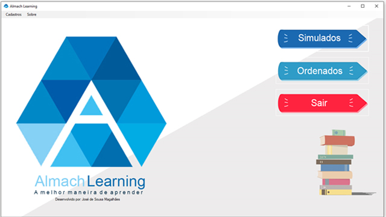

Almach Learning
Software de simulados e tarefas.
Conheça o projeto...
O programa usado no desenvolvimento das atividades foi o Almach Learning. O programa foi desenvolvido com recursos próprios pelo acadêmico do curso de Sistemas de Informação da Universidade Federal do Piauí, José de Sousa Magalhães, também professor de inglês da instituição aqui apresentada.
O programa é constituído de um simulado contendo 15 questões de língua inglesa, divididos segundo habilidades a serem desenvolvidas, tais quais Reading, desenvolvendo a habilidade de compreensão leitora nos alunos, em inglês e português, dando preferência a questões contextualizadas como as usadas pelo ENEM; Grammar, desenvolvendo a habilidade de compreender a gramática da língua inglesa, bem como suas particularidades, dando preferência aos conteúdos ministrados no mês; e Listening, desenvolvendo a habilidade de entender o inglês falado, através de vídeos de assuntos diversos, desde temas cotidianos a científicos.
Lembrando ainda que, junto a estas habilidades trabalhadas nas questões, o uso dos dispositivos tecnológicos, e moral e ética no momento da competição entre os alunos, contribui para que os mesmos desenvolvam mais duas formas de aprender em paralelo às habilidades já mencionada anteriormente.
Mais detalhes
O programa funciona como um simulado, contendo uma pontuação para cada tipo de questão. As questões mais simples possuem de 10 a 15 pontos, as medianas de 25 a 35 pontos, e as difíceis de 40 a 50 pontos. Para cada questão correta, os alunos acumulavam pontos que são somados e apresentados em tempo real na tela do programa, além de os mesmos saberem na hora, se acertaram a pergunta ou não.
Por fim, ao final das 10 questões de interpretação de texto e gramatica, as cinco questões de listening há a necessidade de os mesmos assistirem ao um vídeo em inglês, para solucionarem a questão. Neste momento, o professo apresenta o vídeo (geralmente de 1min a 3min), e após os alunos respondem à questão.
Este software é um projeto independente, e ainda em faze de testes. Como parte de um projeto maior, estes, após avaliações e correções, será distribuído gratuitamente para todas as escolas, para que os professores, independente de suas disciplinas, possam usar com seus alunos.
Caso de uso
As atividades tiveram início no dia do desenvolvimento do software, que compreendeu de 04/03/2019 a 09/03/2019. Neste período, os requisitos do software foram planejados, bem como a programação e designer foram desenvolvidos. Após este momento, o programa foi testado pela primeira vez em espaço reservado.
Depois do teste inicial, o mesmo foi instalado em todos os computadores do laboratório de informática da Escola Hesíchia de Sousa Brito, onde foi ainda, testado em todos os dispositivos para evitar falhas ou inoperância. Essa instalação e teste, ocorreu na manhã de 11/03/2019.
O uso prático do software ocorre na tarde do dia 11/03/2019, com as turmas de 2º D, 3ºF e 1Gº respectivamente. Seguidas do dia 12/03/2019, com as turmas de 2º E, 3ºE e 2ºF respectivamente, e por fim, no dia 13/03/2019 com a turma 3º G, contemplado três dias de uso do software com os alunos.
Na ocasião, fora identificado como menor pontuação das questões, 60 pontos, e como maior pontuação, 380 pontos. Percebeu-se além de outros detalhes importantes, a interação dos alunos em comparar suas pontuações com os colegas, a fim de ver qual se destacou mais. A concentração dos mesmos em resolver as questões também foi alo a ser considerado, uma vez que o ambiente permaneceu em silêncio, a grande maioria do tempo.
Ao final, fora questionado aos alunos se o momento os agradou, e se o processo poderia ser repetido mais vezes, a resposta fora um “SIM” em ambas as perguntas. Isso, leva a já deixar registrado que o processo irá se repetir usando o mesmo software, porém, com atividades diferentes.
Conclui-se então que, o uso do Almach Learning com os alunos da Escola Hesíchia aqui mencionados, contribuiu de inúmeras formas: no aprendizado dos alunos, algo que será avaliado posteriormente, na interação social entre os mesmos, e na diversificação e reinvenção da forma de dar aula, uma vez que proporcionamos aos mesmos um ambiente novo, com recursos novos de aprendizagem. Tal fato, enriquece-nos como professor.
Desenvolvido por: José de Sousa Magalhães
Aluno do curso de Sistemas de Informação - UFPI